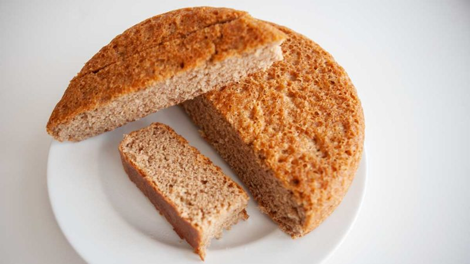

Tibetan Barley Bread

Description
A hearty dense loaf popular in the high Himalayas.
One bite into this and you will be ready to summit
Everest or philosophize with the Dali Lama. Also works
well as a weapon to fight off amourous Yak.
Ingredients
- 2 cups barley flour
- 4 cups wheat flour
- 1/2 cup millet meal (or roasted sunflower seeds or roasted sesame seeds)
- 1 1/2 teaspoons salt
- 2 tablespoons sesame or corn oil
- 3 1/4 cups boiling water
Method
- Pan roast barley flour in the oil until darkened
- Mix flours together with salt
- Add oil, rubbing flour between hands until oily
- Add boiling water, using spoon to mix until dough begins to form
- Mix with hands, keep your hands cool by dipping them in a bowl of cold water
- Mix until it is the consistancy of a large earlobe
- Knead until smooth
- Place in an oiled pan and cut the top several times lengthwise
- Proof for 2-6 hours or overnight
- Bake at 450 degrees for 20 minutes on the middle rack then 400 for 40 minutes on the top rack
- Crust will be tough but inside tender